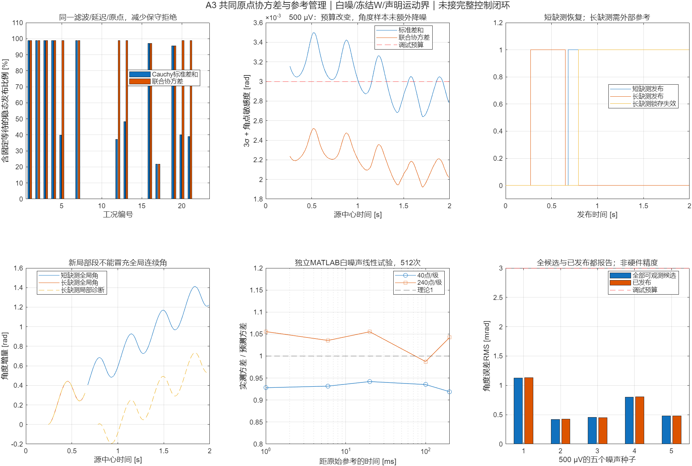
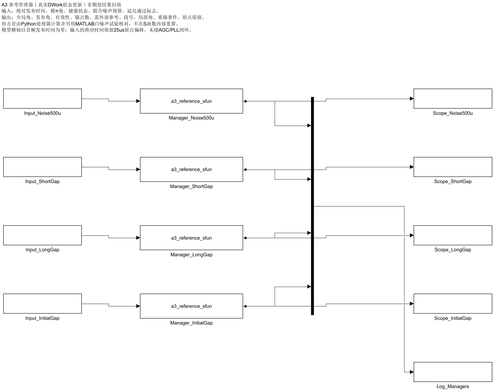

500 μV正常白噪声的五个种子：240点/级在参考就绪后的帧全部满足本次0.003 rad调试预算；把固定20 ms参考等待也计入0.25 s预热后的分母，发布率98.86%。40点/级仍拒绝；1 mV两种窗口仍拒绝。
同一角度序列并未额外降噪；改进来自正确计算当前帧与原始参考的联合方差，减少标准差相加导致的过度拒绝。重锚定只改变局部数值参考，不清除原始参考误差。
稳态数学源延迟保持1.0775/6.0775 ms，首次输出另等20 ms参考就绪。协方差计算和硬件执行耗时未测，6.08 ms仍占假定5 Hz/0.2 rad相位预算约95.5%，未证明可直接接入旧闭环。

10 ms检测数据失效及20 ms恢复观察后，声明速率界下可续接原全局角。120 ms失效后，恢复检查不能保证模π分支唯一，锁存全局无效；只提供带新段号的局部诊断角，全局输出NaN。初始参考未到达时保持等待；有色噪声探针和违反运动界也拒绝。
“原点保留”表示初始参考仍记在状态中，不表示缺测期间当前全局角可发布。外部参考重新同步接口尚未实现。

4种参考状态场景×2000帧，9个输出/场景逐点核对；最大差0，无效NaN掩码相同。S函数实际推进DWork状态；协方差由Python处理器计算，另以MATLAB滤波/累加对白噪声做512次独立线性试验。
移位噪声核Gram矩阵对相关和公式的相对差约1.98×10⁻⁹；MATLAB相对角方差实测/预测约0.919–1.056。它们不构成真实硬件或非线性全程失效概率认证。
| 工况 | 每级窗口 | 类型 | 时域噪声RMS [V] | 标准差和发布率 | 联合协方差发布率 | 参考等待后发布率 | 已发布RMS [rad] | 分支状态 | 检查 |
|---|---|---|---|---|---|---|---|---|---|
| case_001 | 40 | none | 0 | 98.86% | 98.86% | 100.00% | 5.25128e-06 | 未锁存分支丢失 | 匹配 |
| case_002 | 40 | none | 0 | 98.86% | 98.86% | 100.00% | 3.2298e-06 | 未锁存分支丢失 | 匹配 |
| case_003 | 40 | none | 0 | 98.86% | 98.86% | 100.00% | 5.05384e-06 | 未锁存分支丢失 | 匹配 |
| case_004 | 40 | none | 5e-06 | 98.86% | 98.86% | 100.00% | 1.78047e-05 | 未锁存分支丢失 | 匹配 |
| case_005 | 40 | none | 0.0005 | 0.00% | 0.00% | 0.00% | — | 未锁存分支丢失 | 匹配 |
| case_006 | 40 | none | 0.001 | 0.00% | 0.00% | 0.00% | — | 未锁存分支丢失 | 匹配 |
| case_007 | 40 | none | 5e-06 | 98.86% | 98.86% | 100.00% | 0.000104092 | 未锁存分支丢失 | 匹配 |
| case_008 | 40 | none | 5e-06 | 0.00% | 0.00% | — | — | 未锁存分支丢失 | 匹配 |
| case_009 | 40 | none | 5e-06 | 0.00% | 0.00% | — | — | 未锁存分支丢失 | 匹配 |
| case_010 | 40 | none | 5e-06 | 0.00% | 0.00% | — | — | 未锁存分支丢失 | 匹配 |
| case_011 | 40 | none | 5e-06 | 0.00% | 0.00% | — | — | 未锁存分支丢失 | 匹配 |
| case_012 | 40 | none | 0.0005 | 0.00% | 0.00% | 0.00% | — | 未锁存分支丢失 | 匹配 |
| case_013 | 40 | none | 0.0005 | 0.00% | 0.00% | 0.00% | — | 未锁存分支丢失 | 匹配 |
| case_014 | 40 | none | 0.001 | 0.00% | 0.00% | 0.00% | — | 未锁存分支丢失 | 匹配 |
| case_015 | 40 | none | 0.001 | 0.00% | 0.00% | 0.00% | — | 未锁存分支丢失 | 匹配 |
| case_016 | 40 | short_dropout | 5e-06 | 97.14% | 97.14% | 98.27% | 1.78007e-05 | 未锁存分支丢失 | 匹配 |
| case_017 | 40 | long_dropout | 5e-06 | 21.71% | 21.71% | 21.97% | 1.88771e-05 | 需外部参考 | 匹配 |
| case_018 | 40 | nonwhite_noise | 0.0005 | 0.00% | 0.00% | — | — | 未锁存分支丢失 | 匹配 |
| case_019 | 40 | initial_dropout | 5e-06 | 95.43% | 95.43% | 100.00% | 1.59077e-05 | 未锁存分支丢失 | 匹配 |
| case_020 | 40 | fresh_noise_seed | 0.0005 | 0.00% | 0.00% | 0.00% | — | 未锁存分支丢失 | 匹配 |
| case_021 | 40 | fresh_noise_seed | 0.0005 | 0.00% | 0.00% | 0.00% | — | 未锁存分支丢失 | 匹配 |
| case_022 | 40 | fresh_noise_seed | 0.001 | 0.00% | 0.00% | 0.00% | — | 未锁存分支丢失 | 匹配 |
| case_023 | 40 | fresh_noise_seed | 0.001 | 0.00% | 0.00% | 0.00% | — | 未锁存分支丢失 | 匹配 |
| case_001 | 240 | none | 0 | 98.86% | 98.86% | 100.00% | 0.000198985 | 未锁存分支丢失 | 匹配 |
| case_002 | 240 | none | 0 | 98.86% | 98.86% | 100.00% | 0.000117455 | 未锁存分支丢失 | 匹配 |
| case_003 | 240 | none | 0 | 98.86% | 98.86% | 100.00% | 0.000193953 | 未锁存分支丢失 | 匹配 |
| case_004 | 240 | none | 5e-06 | 98.86% | 98.86% | 100.00% | 0.000192695 | 未锁存分支丢失 | 匹配 |
| case_005 | 240 | none | 0.0005 | 39.94% | 98.86% | 100.00% | 0.00112979 | 未锁存分支丢失 | 匹配 |
| case_006 | 240 | none | 0.001 | 0.00% | 0.00% | 0.00% | — | 未锁存分支丢失 | 匹配 |
| case_007 | 240 | none | 5e-06 | 98.86% | 98.86% | 100.00% | 0.000182882 | 未锁存分支丢失 | 匹配 |
| case_008 | 240 | none | 5e-06 | 0.00% | 0.00% | — | — | 未锁存分支丢失 | 匹配 |
| case_009 | 240 | none | 5e-06 | 0.00% | 0.00% | — | — | 未锁存分支丢失 | 匹配 |
| case_010 | 240 | none | 5e-06 | 0.00% | 0.00% | — | — | 未锁存分支丢失 | 匹配 |
| case_011 | 240 | none | 5e-06 | 0.00% | 0.00% | — | — | 未锁存分支丢失 | 匹配 |
| case_012 | 240 | none | 0.0005 | 37.26% | 98.86% | 100.00% | 0.00042318 | 未锁存分支丢失 | 匹配 |
| case_013 | 240 | none | 0.0005 | 48.17% | 98.86% | 100.00% | 0.000452456 | 未锁存分支丢失 | 匹配 |
| case_014 | 240 | none | 0.001 | 0.00% | 0.00% | 0.00% | — | 未锁存分支丢失 | 匹配 |
| case_015 | 240 | none | 0.001 | 0.00% | 0.00% | 0.00% | — | 未锁存分支丢失 | 匹配 |
| case_016 | 240 | short_dropout | 5e-06 | 97.14% | 97.14% | 98.27% | 0.000194061 | 未锁存分支丢失 | 匹配 |
| case_017 | 240 | long_dropout | 5e-06 | 21.71% | 21.71% | 21.97% | 0.00018512 | 需外部参考 | 匹配 |
| case_018 | 240 | nonwhite_noise | 0.0005 | 0.00% | 0.00% | — | — | 未锁存分支丢失 | 匹配 |
| case_019 | 240 | initial_dropout | 5e-06 | 95.43% | 95.43% | 100.00% | 0.000144935 | 未锁存分支丢失 | 匹配 |
| case_020 | 240 | fresh_noise_seed | 0.0005 | 40.11% | 98.86% | 100.00% | 0.000803194 | 未锁存分支丢失 | 匹配 |
| case_021 | 240 | fresh_noise_seed | 0.0005 | 38.91% | 98.86% | 100.00% | 0.000479106 | 未锁存分支丢失 | 匹配 |
| case_022 | 240 | fresh_noise_seed | 0.001 | 0.00% | 0.00% | 0.00% | — | 未锁存分支丢失 | 匹配 |
| case_023 | 240 | fresh_noise_seed | 0.001 | 0.00% | 0.00% | 0.00% | — | 未锁存分支丢失 | 匹配 |
两列发布率使用同一前端、同一首次原点、同一管理器及同一等待规则。长缺测例可在故障前发布，此后保持无效，不能把全段累计发布率当成恢复成功。
From Workspace输入不能含NaN，因此输入中的未就绪quality明确编码为超预算哨兵，健康标志仍无效；原始CSV与输出NaN保留。首轮接口错误记录保留在trials。
不声称解决有色噪声、未知W漂移、量化、抖动、饱和、真实机体角速度、执行耗时或全闭环稳定性；工程改良也不是文献独创性证明。